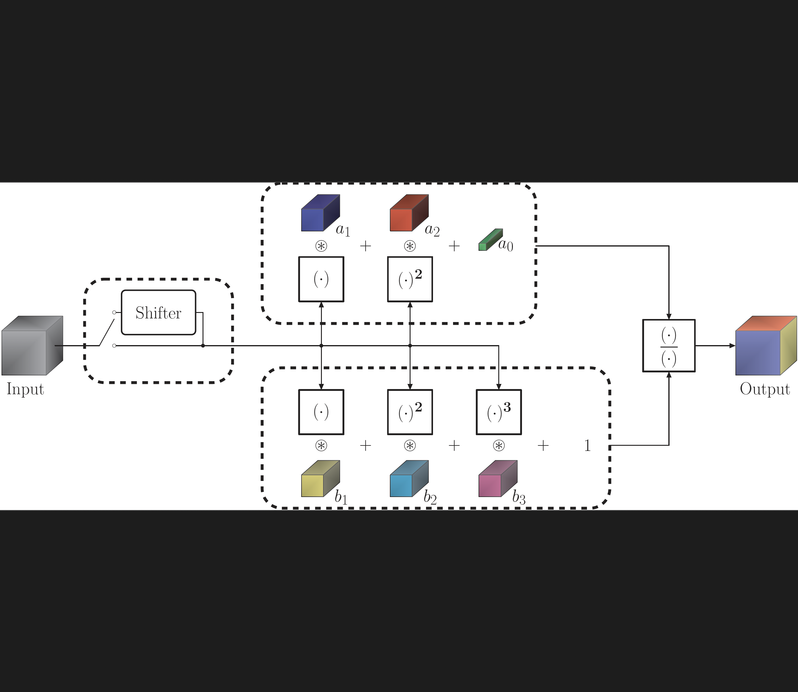
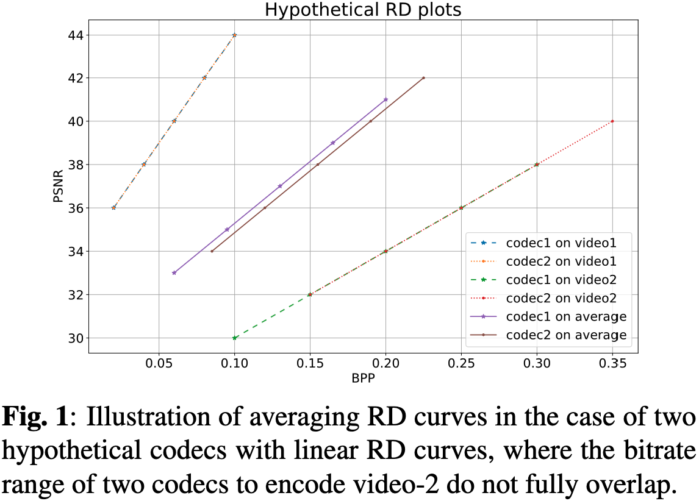
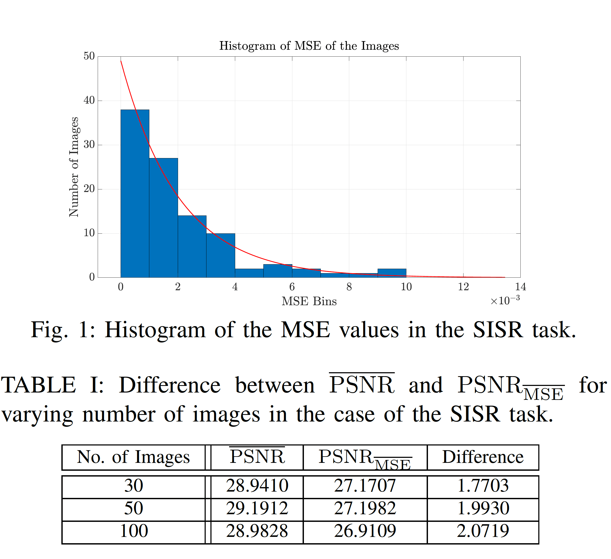
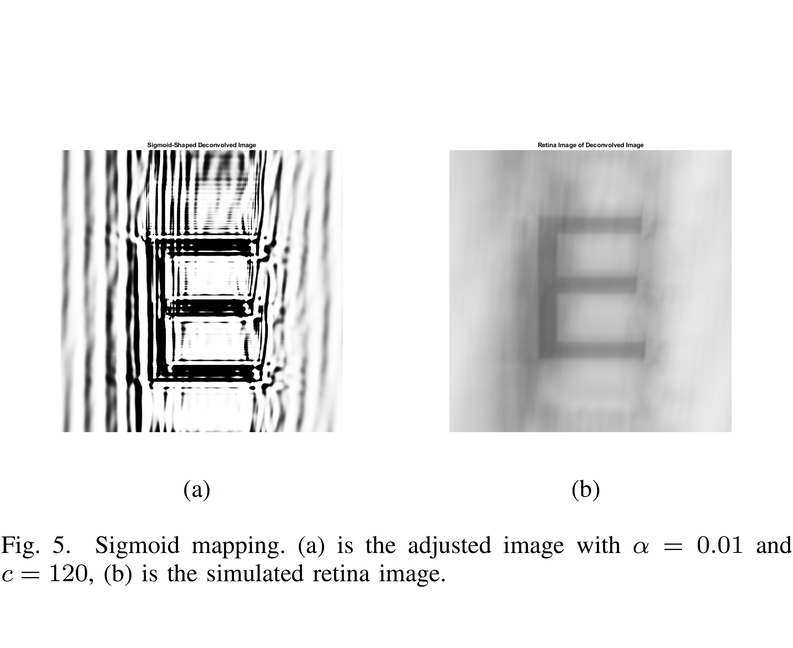

Onur Keleş
I am an enthusiastic researcher working in computer vision, with a strong interest in new paradigms, neuron models and architecture blocks. I was previously a Senior AI Research Scientist at Codeway Digital Services. I received my Ph.D. degree in Electrical and Electronics Engineering from Koç University, while working at the Koç University İş Bankası Artificial Intelligence (KUIS AI) Center. My doctoral research focused on non-linear neuron modeling using Padé approximants, with direct applications to single-image super-resolution and image compression. Prior to my Ph.D.,I received my M.Sc. and B.Sc. degrees in Electrical and Electronics Engineering from Boğaziçi University, establishing a strong foundation in signal processing.
New model/learning paradigms · Non-linear neuron models
Image and video super-resolution · Learned image compression ·
Generative video synthesis (talking-head generation, lip synchronisation)
Gaussian splatting
Education
Ph.D. in Electrical & Electronics Engineering
Koç University, İstanbul, Türkiye
Dissertation: Non-linear Neuron Modeling using Padé Approximants with Applications to Single Image Super-Resolution and Image Compression
Focused on developing novel neuron models and used it for image super-resolution, compression and classification.
Advised by Prof. A. Murat Tekalp.
Graduated with GPA: 4.0/4.0.
M.Sc. in Electrical & Electronics Engineering
Boğaziçi University, İstanbul, Türkiye
Thesis: Vision Correction for the Visually Impaired via Digital Image Processing
Specialized in image processing techniques for improving the perceived image quality by the visually impaired.
Graduated with GPA: 3.5/4.0.
B.Sc. in Electrical & Electronics Engineering
Boğaziçi University, İstanbul, Türkiye
Design Project: Automatic Punctuation Generation for Turkish
Specialized in signal and image processing techniques.
Graduated with GPA: 3.24/4.0.
Exchange Program for Chinese Language and Culture
Shanghai University, Shanghai, China
Chinese language and culture education.
Completed with score: 90/100.
Mathematics and Science Track
Aksaray Science High School, Aksaray, Türkiye
Second place graduation ranking.
Graduated with score: 92.52/100.
Publications

Padé Neurons for Efficient Neural Models

Paon: A New Neuron Model Using Padé Approximants

The Practice of Averaging Rate-Distortion Curves over Testsets to Compare Learned Video Codecs Can Cause Misleading Conclusions

Self-Organized Residual Blocks for Image Super-Resolution

Self-Organized Variational Autoencoders (Self-VAE) for Learned Image Compression

On the Computation of PSNR for a Set of Images or Video

Adjustment of Digital Screens to Compensate the Eye Refractive Errors via Deconvolution
Work Experience
Senior AI Research Scientist
Codeway Digital Services, İstanbul, Türkiye
Led a 4-person team to develop and improve lip synchronization, video dubbing, and talking head generation solutions.
Together with the team, increased head video generation from 90 FPS to 2800 FPS with enhanced fidelity using Gaussian splatting, providing the ability for real-time deployment.
AI Research Scientist
Codeway Digital Services, İstanbul, Türkiye
Developed a fast, efficient solution for multi-face recognition and separation for identity-specific face generation.
In a team, improved the naturalness of a face reenactment model outputs.
Contributed to products: Pixelup, Retake, FaceDance.
AI Research Scientist (Part-time)
Codeway Digital Services, İstanbul, Türkiye
Doubled the output resolution of a top-chart mobile application for face image enhancement, improving image clarity.
Contributed to products: Pixelup.
Doctoral Researcher (Part-time)
Koç University İş Bankası Artificial Intelligence (KUIS AI) Center, İstanbul, Türkiye
Proposed a novel, inherently non-linear neuron model, applied the model to super-resolution and image compression problems, resulting in a published conference paper and a journal paper.
Doctoral Researcher
Koç University İş Bankası Artificial Intelligence (KUIS AI) Center, İstanbul, Türkiye
Advanced research on non-linear neuron models in super-resolution and image compression, published three conference papers detailing research outcomes.
Software Specialist (Part-time)
Speech-Enabled Software Technologies (SESTEK), İstanbul, Türkiye
Initiated development of text-to-speech (TTS) software, and prepared a dictionary, for Chinese language.
Enhanced automatic punctuation generation for Turkish text produced by speech-to-text (STT) software.
Software Engineering Intern
Speech-Enabled Software Technologies (SESTEK), İstanbul, Türkiye
Worked in the R&D department to code software for automatic punctuation of speech-to-text transcriptions from scratch.
Engineering Intern
Huawei Communication, İstanbul, Türkiye
Contributed to the Network Technology Department (NTD) by working on gigabit passive optical network (GPON) technology.
Engineering Intern
ASELSAN Military Electronic Corporation, Ankara, Türkiye
Assisted the REH˙IS-SMD-EHKK System Engineering Department.
Implemented an algorithm for compressive sampling with potential radar applications.
Research Projects
Professional Service
Teaching Experience
Reviewership
Presentations
Conferences
Invited Talks
Achievements and Awards
Project Scholarship
The Scientific and Technological Research Council of Türkiye (TÜBİTAK)
Academic Personnel and Graduate Education Entrance Exam (ALES)
National graduate admissions exam; ranked 41st out of around 120,000 participants in Türkiye.
2210-A Scholarship
The Scientific and Technological Research Council of Türkiye (TÜBİTAK)
University Placement Exam (YGS and LYS)
National university placement exam; ranked 485th out of 1.8 million participants in Türkiye.
Mathematics Olympiad
3rd place in Kılıçarslan Mathematics Olympiad while in Kayseri, Türkiye.
Turkish National Folk Dance Competition
1st place in the nation-wide contest while in Aydın, Türkiye.
Chess Competitions
Total of 13 gold, silver, and bronze medals and 2 cups in chess competitions in Türkiye.